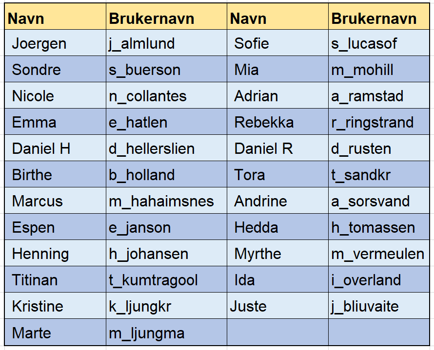

me
Programmering Sphero BOLT
Programmering Sphero BOLT (3.oktober 2019)
Dette bør du gå gjennom før du begynner med programmering med Sphero BOLT
For å komme i gang med programmering med Sphero BOLT roboter, bør de gjør følgende:
- Last ned appen Sphero Edu
- Logg på (Sign in) med brukernavn (se tabell nedenfor) og passord som jeg har send til alle elever individuelt
- Open første activity: BLOCKS1
- Hvordan? se på video nedenfor eler spør lærer
Tabell med nav og brukernavn til elevene:

Hovedside
© 2019 GitHub, Inc.